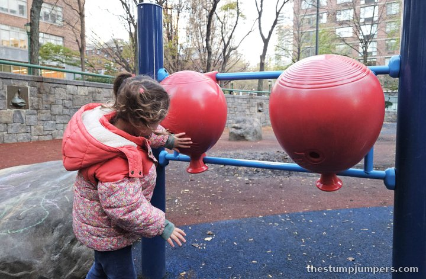
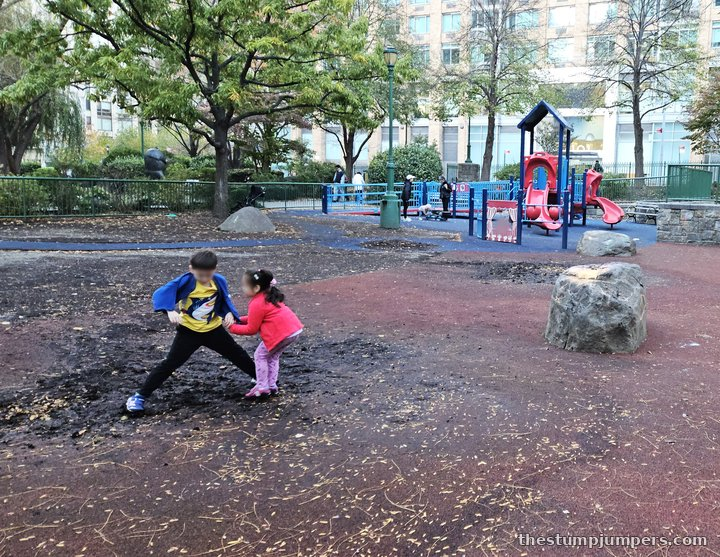
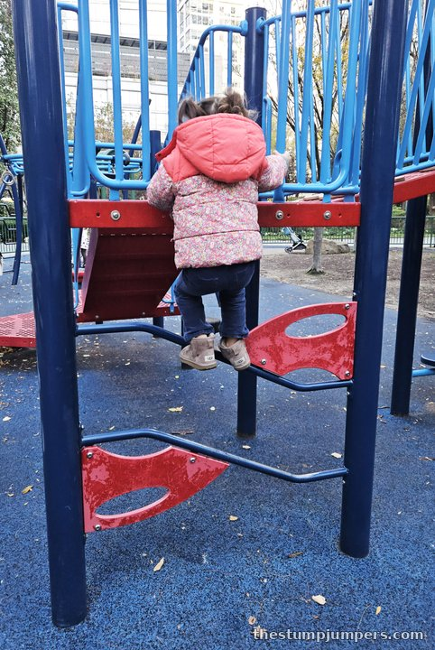
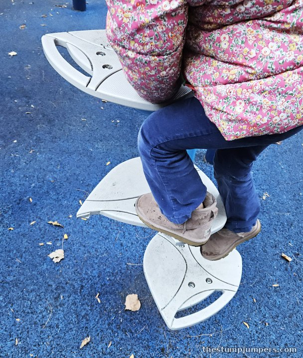
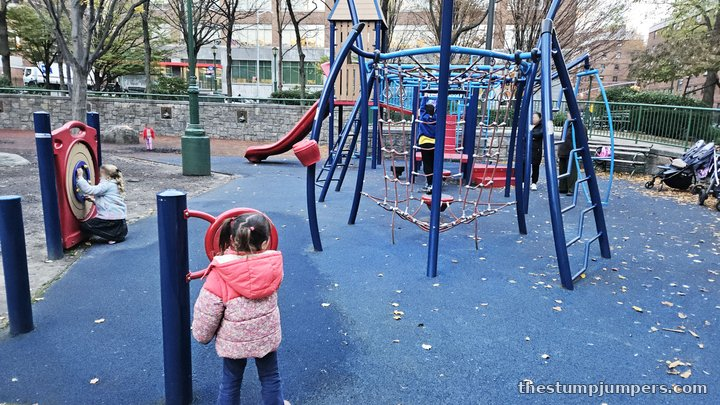
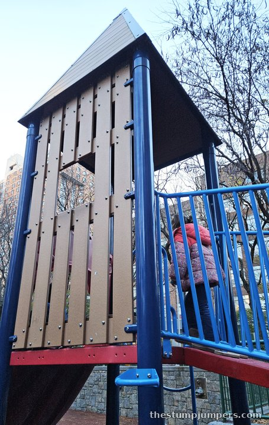
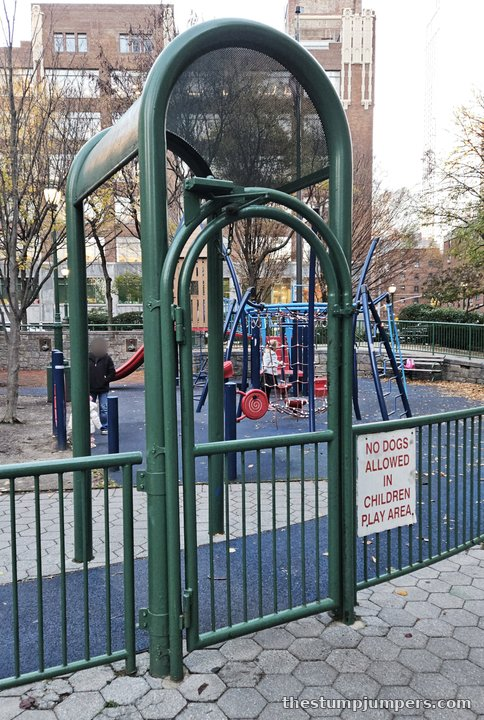
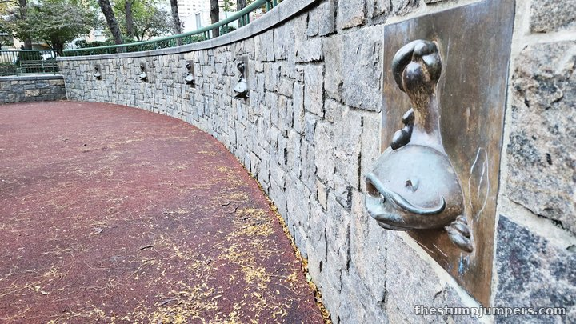
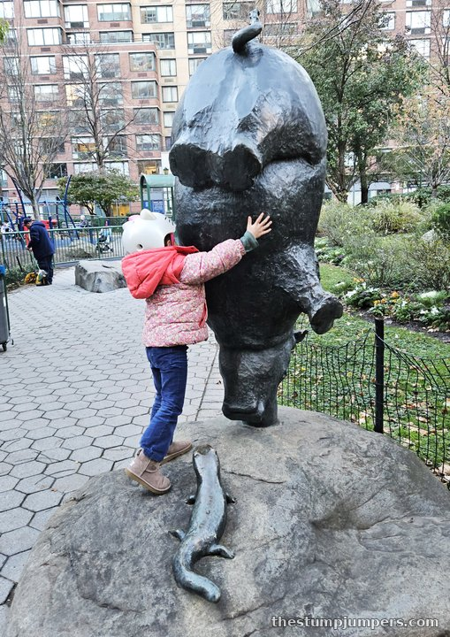

West End Park: Like Slapping a Piece of Garbage

Pretty darn dumpy. That's the short version.

Let's start with the mud. Big puddles of it, washed into the playground from the natural part of the park next door. We haven't had a hurricane lately, so there's no excuse for it still being there. Then again, the kids were having the time of their lives stomping through it, so maybe it's a feature. I'm working on being less close-minded.
Then there's the plastic. Lots of it, faded the way plastic always fades. Someone tried painting over the worst of it, which raises the question: what looks worse than faded plastic? Peeling painted plastic. (Maybe the same genius got to Erie Canal.) Other pieces have gone brittle and cracked, like the leaf-shaped steps up to the main structure. Even the rubber floor, once fire-engine red, is now a splotchy, dirty, faded mess.



Scattered around are little plastic spinners, noisemakers, and doodads, about half of which don't work. No surprise there. I was genuinely excited to smack the big red balloons (nointy noine luftbaluns?), expecting a satisfying womp. Instead, it was like slapping a piece of garbage. The “bongos” were no better: zero drum noise. My daughter had the right attitude: slap it a couple of times, nothing happens, move on. I'm the one who can't let it go. Lame playgrounds just put me in a bad mood.

The equipment is by GameTime, out of Fort Payne, Alabama (what a place for a playground company), and it splits into a little-kid side for ages 2 to 4 and a big-kid side for about 4 to 7. Nothing here for anyone older. The whole thing has a weird carnival theme that clashes with everything around it: the classic bronze fish on the wall, the nicely landscaped park outside the gate.
And about that name. West End Park is technically on West End Avenue, but at its very southern tip. It should be called Southwest End Park. Then it could have a cool New Mexico theme, which would beat the no theme it has now. I may start a petition.
OK, in fairness, two things here are genuinely good. The entrance gate is epic, so heavy even adults struggle with it, and the fence around the playground is solid, with a clear line of sight everywhere. If you're looking for a place to lock up your kids, this is it. And along a curved stone wall are some cool bronze fish fountains. They weren't spitting while we were there, so I'll come back in the summer to see them in action.



I actually like the rest of the park: nice landscaping, a cool bronze rhino just outside the playground gate, and some repurposed Hudson River railroad blocks. The crowd was local families with a we-didn't-have-time-for-Central-Park, the-local-park-will-do kind of attitude. Fair enough.
Fun fact: the whole park is privately owned, a public space that came with the apartment towers next door, and it's posted as open until 1 a.m., with lights. Like Balsley Park, the other privately owned playground we've reviewed, it goes to show that public playgrounds seem to be much nicer than private ones.
No bathrooms nearby. Playground hoppers like me, take note: Gertrude Ederle Playground is a short walk away on W. 60th St., so you can hit both in one trip. It's the better of the two.
Verdict: a secure playground with a great gate and cool bronze fish, buried under faded, peeling, broken plastic and a mud problem. Fine if you live upstairs. Otherwise, walk down to Gertrude Ederle.
The Stump Report
Biking & Running There
By bike: that's how we came, on the Stumpjumper. Enter on the northwest side; the east side entrances have steps. The Hudson River Greenway is right next door. By train: 1 to 66 St–Lincoln Center, then walk west to West End Avenue and south to 64th Street.
More to Do Nearby
- Gertrude Ederle Playground about 0.2 mi away · 2.4
- Pier 97 Playground about 0.4 mi away · 2.6
- Erie Canal Playground about 0.5 mi away · 2.8